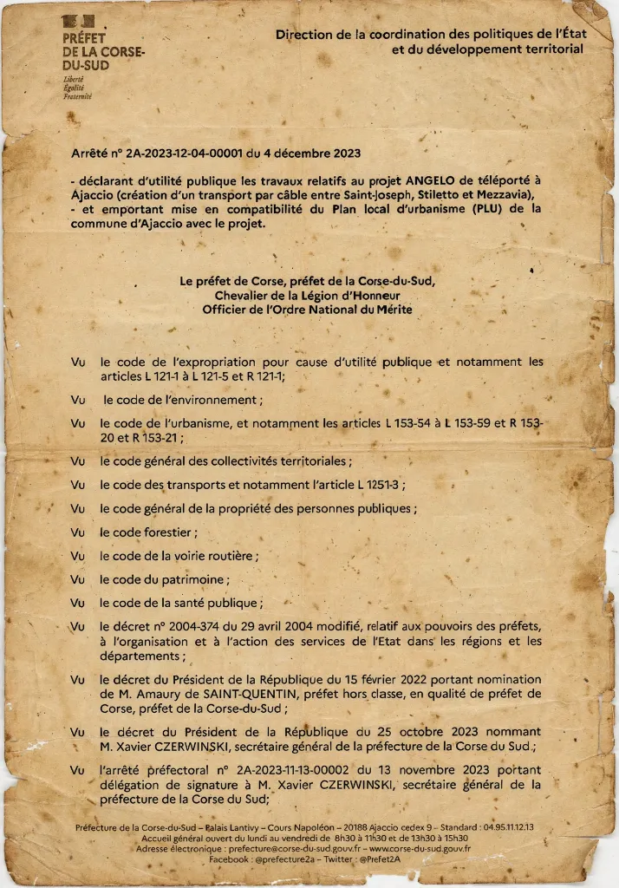
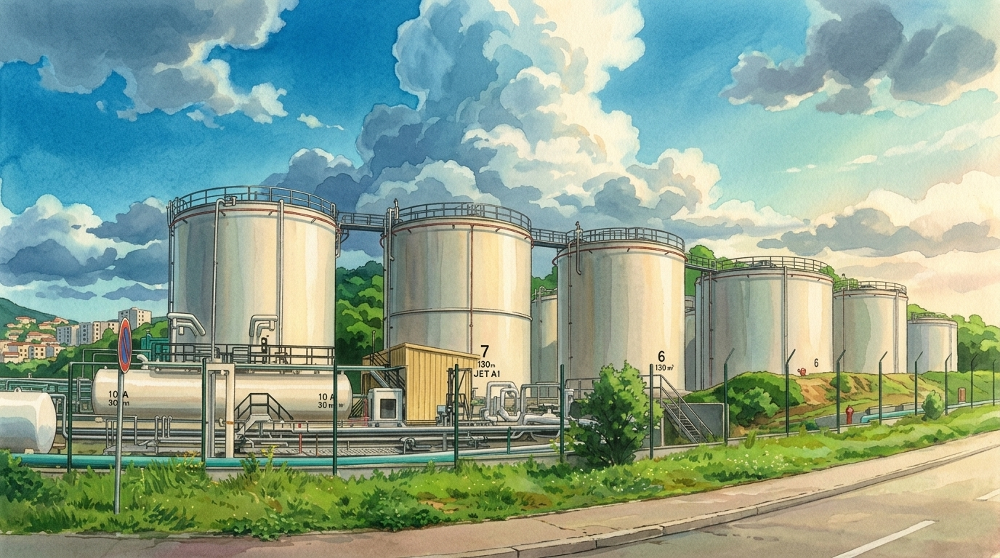
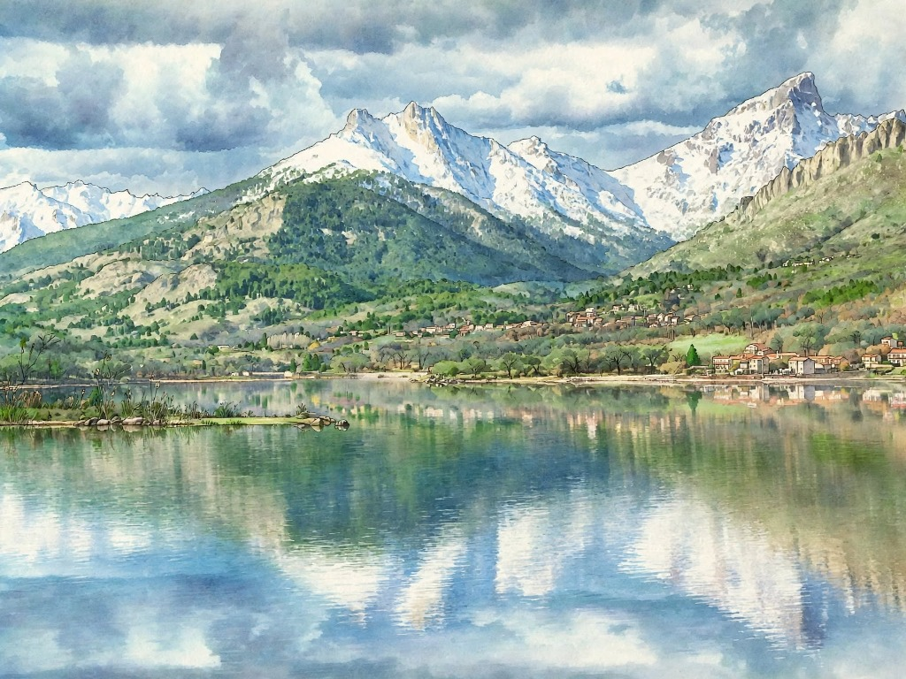
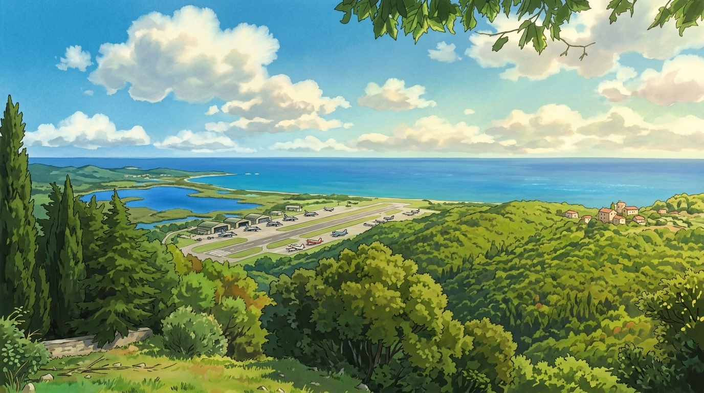

L'Inversion de la Dette : Mémorandum d'Émancipation de la Corse
La démonstration chiffrée de 4,72 milliards d'euros siphonnés chaque année hors de notre île (28 693 € par foyer) et l'architecture de rupture constitutionnelle (Titre XIII, Protocole Åland).
🟢 Les 8 Grandes Enquêtes Scellées & Opposables
Dossiers d'investigation médico-légale complets, bilans financiers audités et actes officiels consultables.

Angelo — La Rente du Ciel : Le Mirage à 38 M€ qui Rançonne Ajaccio
Inauguré en grande pompe entre Saint-Joseph et Mezzavia, le téléphérique urbain Angelo a coûté 38,7 millions d'euros de travaux et garantit une rente de 2,39 millions d'euros par an sur dix ans à une filiale privée. L'audit médico-légal des actes officiels révèle un scandale financier absolu : le câble s'arrête brutalement à près de deux kilomètres du centre-ville, sur une friche polluée en faillite. Pour payer la première facture de cette infrastructure désertée, la CAPA a vidé la tirelire de secours des ordures ménagères (1,5 M€) en 2025, avant de briser douze ans de gel fiscal en 2026 en prélevant 7 millions d'euros d'impôts supplémentaires sur les contribuables ajacciens.
Le Trésor Confisqué & La Terre Empoisonnée : L'Autopsie du Cadastre Minier Secret de la Corse (19,19 Milliards d'Euros Dérobés)
Pendant qu'on explique aux Corses que l'île est condamnée à vivre sous perfusion des dotations de Paris et que l'autonomie financière est impossible, l'État dissimule sous notre sol et dans nos eaux 19,19 milliards d'euros de ressources stratégiques inexploitées ou pillées sans retour. Pire encore : à Matra, le ruisseau vomit 4 000 microgrammes d'arsenic par litre (400 fois le seuil de sécurité) sans que l'État ne dépollue le site, tout en excluant expressément la Corse de la réforme du Code Minier pour garder le monopole absolu sur nos richesses. L'examen minutieux des concessions officielles, des rapports géologiques du BRGM et des arrêts de justice prouve le double scandale.
Le Droit de Sauver : Pourquoi Paris Laisse la Corse sans Secours Souverains
Territoire montagneux soumis à des sécheresses extrêmes et à des tempêtes violentes, la Corse subit un sous-dimensionnement chronique de ses moyens de secours. L'autopsie médico-légale des comptes de l'OFGL, des rapports de la DGSCGC et des registres de la Collectivité de Corse révèle une triple faillite régalienne : un surcoût touristique de 12 à 15 M€ par an financé à 80 % par l'impôt local corse (203 €/hab en Haute-Corse contre 85 € sur le continent), une flotte aérienne nationale vétuste tombée à 5 Canadairs opérationnels sur 12 le 24 juillet 2026, et le refus jacobin de conventionner avec la base italienne d'Olbia située à 15 minutes de Bonifacio. Face à cette impasse, L'OCHJU déploie le plan d'ingénierie d'une protection civile souveraine : 4 ruptures technologiques mondiales (FireSwarm IA, retardants biosourcés, bouclier gravitaire OEHC, 3 Fire Boss amphibies), la création de la Cumpagnia Corsa di Prutezzione Civile à Corte, et une équation financière ISO 27037 soldée au centime près.

Ajaccio Pris au Piège : L'Autocratie Préfectorale et le Sacrifice Organisé des Bus
Pourquoi vos bus ne passent plus, pourquoi vos enfants attendent des heures aux arrêts, et pourquoi le nouvel hôpital d'Ajaccio se retrouve coincé dans un embouteillage quotidien ? L'enquête médico-légale de L'OCHJU révèle que cette paralysie n'a rien d'un accident : c'est un piège d'aménagement concerté entre la Préfecture de Corse-du-Sud et la communauté d'agglomération (CAPA). Pour imposer un téléphérique à 38 millions d'euros financé par l'État, les pouvoirs publics ont déporté le terminus historique de la Place du Diamant loin du parking souterrain, écarté l'accès routier direct vers l'hôpital, violé les règles de sécurité d'évacuation médicale, gelé le budget des bus communaux à l'euro près, et libéré 9 hectares de foncier de luxe en centre-ville. Autopsie d'un système où l'intérêt des usagers a été sciemment sacrifié.

L'Arme de notre Soumission : Pourquoi Paris ne Lâchera Jamais le Verrou Pétrolier Corse
Pourquoi les familles et les artisans corses paient-ils leurs carburants 10 à 25 centimes plus cher qu'en métropole alors que l'île bénéficie d'une TVA réduite légale à 13 % au lieu de 20 % ? La réponse ne relève ni de la fatalité géographique ni des lois du marché, mais d'une machinerie contractuelle occulte et de 37 ans de complaisance d'État. À travers l'autopsie des 80 pages de la décision 25-D-07 de l'Autorité de la concurrence, les aveux sous serment du procès de Marseille et la base médico-légale de 191 000 relevés citoyens, plongée au cœur d'un cartel qui confisque 48 millions d'euros par an et verrouille l'île, de la pompe de village jusqu'au ciel des aéroports.

Le Château d'Eau Pillé : Comment Veolia et EDF Confisquent l'Eau des Corses
On appelle la Corse le « château d'eau de la Méditerranée » avec ses montagnes enneigées à 2 700 mètres et ses 4 000 kilomètres de rivières. Pourtant, chaque été, on coupe les robinets dans les villages, on interdit aux habitants d'arroser leur jardin et on rationne les agriculteurs. En épluchant les comptes officiels des entreprises et les registres de l'État, L'OCHJU démonte le mensonge de la fatalité climatique : 85 % de l'eau de pluie repart directement à la mer faute d'avoir construit des réserves publiques (3 fois moins d'eau stockée par habitant qu'en Sardaigne), EDF engloutit 1,09 milliard de m³ d'eau douce pour ses turbines électriques, 42 millions de m³ d'eau potable fuient sous nos routes dans des canalisations percées, et le géant privé Veolia encaisse 112,9 millions d'euros par an sur le dos des familles corses.
Le Monopole EDF et le Système Colonial de Rente : L'Imposture des Centrales Thermiques Face à l'Abondance de nos Ressources
Face à sa pointe de consommation de 400 MW en hiver, la Corse dispose de 378 à 428 MW de puissance pilotable propre mobilisable (barrages hydroélectriques, câble sous-marin SACOI 3 et stations de pompage STEP), complétés en journée par 284 MW de solaire citoyen. La construction d'une méga-centrale de 130 MW à 800 millions d'euros au Ricanto et la suppression programmée du gaz à Ajaccio et Bastia constituent un surdimensionnement stratégique. Pourtant, l'État a voté le 29 juin 2026 une loi qui verrouille nos barrages pour 70 ans au profit exclusif d'EDF, bride le solaire citoyen sous un plafond arbitraire de 30 %, et impose une usine thermique de 800 millions d'euros au Ricanto pour brûler 50 000 tonnes de colza importé par pétroliers avec un profit garanti de 10 % par an payé par vos impôts. Tandis que l'État accorde une rentabilité garantie de 9,75 % à des consortiums privés continentaux pour une station de pompage (STEP) à Saint-Antoine en actant 350 millions d'euros d'économies nettes, il interdit aux Corses d'équiper leurs propres barrages publics. Autopsie chiffrée d'un hold-up énergétique et colonial.

Le Sanctuaire Confisqué : L'Autopsie des 2 842 Hectares Militaires et le Système des Rentes d'État (50 Millions d'Euros par An)
Un quart des plaines littorales de Corse est cadenassé sous miradors. Pendant qu'il est devenu impossible de se loger et que les jeunes agriculteurs de l'île sont chassés par la flambée des prix, l'État exploite notre sol comme une entreprise commerciale géante qui rapporte 50 millions d'euros par an à Paris. L'examen minutieux des documents officiels — du traité international déposé à l'ONU au contrat de 91 millions d'euros pour les pistes, en passant par les rapports sur l'eau et les 2 848 terrains recensés au cadastre — démontre que l'armée viole la loi fiscale et doit immédiatement 19,75 millions d'euros d'arriérés aux communes corses.
⚖️ Registre d'Instruction des Futurs Dossiers
Dossiers en cours d'instruction dans les laboratoires de la cellule. Aucune publication tant que chaque calcul n'est pas scellé au bit près.
| Réf. Dossier | Thématique & Cible | État d'Instruction | Action Citoyenne |
|---|---|---|---|
| DOSSIER-01 | Le Grand Verrou Financier La mécanique secrète des prêts in fine et la captation de l'épargne insulaire | Audit des flux bancaires | Déposer une pièce → |
| DOSSIER-03 | Le Manifeste Universel du Sol Autopsie de la dépossession foncière, des préemptions et des zonages PLU | Cartographie 360 communes | Déposer une pièce → |
| DOSSIER-05 | L'Empire des SCI Non-Résidentes Radiographie des bénéficiaires effectifs (RBE) et cascades de sociétés | Croisement RBE en cours | Déposer une pièce → |
| DOSSIER-15 | Le Scandale des Primes PAC & Terres Agricoles Audit du registre parcellaire graphique (RPG) et des captations d'aides européennes | Croisement cadastral en cours | Déposer une pièce → |
| DOSSIER-21 | Le Scandale des Déchets du SYVADEC La rente privée de l'exportation maritime des déchets vers le continent | Audit des bordereaux de prix | Déposer une pièce → |
On ne fait pas taire la vérité. Devenez le mégaphone de L’OCHJU.
Face à une mobilisation populaire historique — +700 000 vues enregistrées en un mois sur nos 29 dossiers d'investigation et nos audits cadastraux —, notre page sur les réseaux sociaux fait l'objet d'un blocage par vagues de signalements coordonnés. La liberté d'informer ne dépend d'aucun algorithme privé. Aidez-nous à briser l'omerta en relayant ce message sur vos réseaux.

« La Justice, la vertu et l'amour de la Patrie doivent être les seuls moteurs de nos actions. Le Peuple Corse, ayant recouvré sa liberté, entend donner une forme durable à son gouvernement en fondant sa Constitution sur la raison et la vérité. »
— Pasquale Paoli, Préambule de la Constitution de la Corse (18 Novembre 1755)
LE SAVOIR PARTAGÉ EST NOTRE CONTRE-POUVOIR
Sous le vernis du silence et de la résignation, l'écran s'est allumé +700 000 fois en un mois. Ni maîtres, ni compromis : voici la vérité des chiffres pour rendre au peuple son pouvoir de décider.
📜 Lire le Texte Intégral du Manifeste ▼
👁️ Vous croyez qu'il ne s'agit que d'articles. Vous pensez qu'il ne s'agit que de chiffres alignés sur un écran. Sept cent mille fois en un mois, l'écran s'est éclairé. C'est la preuve vivante que vous n'attendiez qu'une seule chose : l'étincelle de la vérité.
Pendant des décennies, ils ont régné sur un empire d'opacité. Ils ont misé sur votre fatigue et l'ignorance programmée. Ils vous ont dit que les dossiers étaient "trop complexes", que le foncier était un casse-tête, que l'eau, les transports ou l'énergie échappaient à votre contrôle. Ils vous ont menti.
L'OCHJU n'est pas une tribune d'opinion. L'OCHJU est une rupture médico-légale dans leur système. Nous combinons l'ingénierie de données (actes officiels bruts, veille cadastrale avec Bufitonu.fr, décryptage des bilans financiers) avec l'éveil citoyen.
« L'opacité n'est pas une fatalité. Le Savoir partagé est notre contre-pouvoir. »
🗺️ Cartographie & Action Citoyenne Intercommunale
🏛️ CAPA (Pays Ajaccien)
Communauté d’AgglomérationAjaccio, Afa, Alata, Appietto, Bastelicaccia, Sarrola-Carcopino, Tavaco, Peri, Cuttoli, Villeneuve.
🤝 Radar des Transactions & Valeurs Foncières (360 Communes)
💡 Pourquoi consulter le registre DVF (Demandes de Valeurs Foncières) ?
Ce registre officiel de la Direction Générale des Finances Publiques (DGFiP) répertorie l'intégralité des ventes de terrains et biens immobiliers réelles conclues en Corse. Il permet de repérer la spéculation foncière, les acquisitions massives par des holdings ou SCI extérieures et de comparer le prix réel au m² avec les revenus locaux sur chacune des 360 communes.
Afa
EPCI : CAPA (Pays Ajaccien)⚖️ Exiger un Document Public — Le Droit de Savoir Citoyen
💡 Qu'est-ce que "Le Droit de Savoir Citoyen" ?
En France et en Corse, aucun maire, préfet ou président de syndicat ne peut dissimuler un document public (budgets, permis de construire, contrats d'eau, délibérations). La loi donne à chaque citoyen le droit d'exiger copie de ces pièces. Si l'administration refuse de répondre, l'instance nationale officielle chargée de la contraindre s'appelle la CADA (Commission d'Accès aux Documents Administratifs). Grâce à cet outil, générez votre courrier officiel pré-rempli en 10 secondes.
🔒 Coffre-Fort d'Alerte Citoyenne & Dépôt de Preuves
Vous êtes fonctionnaire, agent municipal, salarié du BTP ou citoyen et vous disposez de documents officiels attestant d'inégalités foncières, de permis tacites abusifs ou de détournement d'aides publiques ?
fsucieta@tutamail.com.